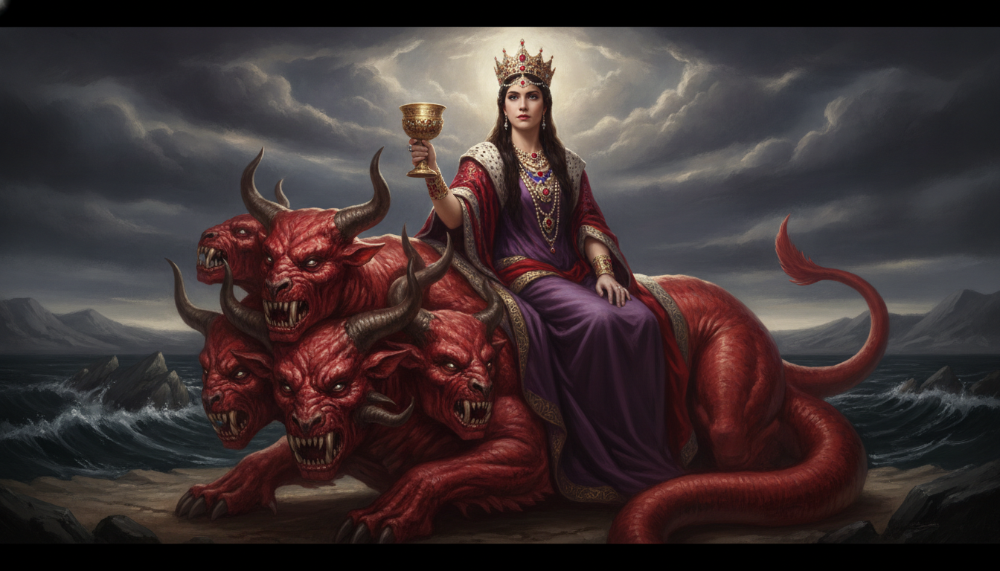

曠野中的真面目
「曠野」(ἔρημος, erēmos) 是剝除虛飾之處。世人眼中的巴比倫是繁華，但在聖靈視角下，她只是騎在野獸上的背叛者。
金杯中的毒酒
「可憎之物」(βδέλυγμα, bdelygma) 象徵偶像崇拜。這杯名利雖然甘甜，卻是建立在聖徒的鮮血之上，是毀滅性的誘惑。
虛假與永恆的對決
獸的特徵是「先前有、如今沒有、以後再有」，這是對神永恆屬性的贗品模仿。唯一能安穩的是名字寫在生命冊上的人。

在誘惑中堅守生命冊的印記
「你所看見的獸，先前有，如今沒有，將要從無底坑裡上來，又要歸於沉淪。凡住在地上、名字從創世以來沒有記在生命冊上的，見先前有、如今沒有、以後再有的獸，就必詫異。」
主阿，我們身處在一個充滿誘惑與敵擋祢真理的世界中。這世界的榮華如同巴比倫的金杯，時常蒙蔽我們的雙眼。求祢賜給我們屬靈的洞察力，將我們帶入真理的曠野，使我們能看穿世俗權力與財富的虛假。幫助我們不因這世界的威嚇而畏縮，也不因它的誘惑而沉醉。堅固我們的信心，讓我們深深確信自己的名字已記錄在創世以來的生命冊上，使我們能專注仰望那位得勝的羔羊。奉主耶穌基督的聖名祈求，阿們。
「曠野」(ἔρημος, erēmos) 是剝除虛飾之處。世人眼中的巴比倫是繁華，但在聖靈視角下，她只是騎在野獸上的背叛者。
「可憎之物」(βδέλυγμα, bdelygma) 象徵偶像崇拜。這杯名利雖然甘甜，卻是建立在聖徒的鮮血之上，是毀滅性的誘惑。
獸的特徵是「先前有、如今沒有、以後再有」，這是對神永恆屬性的贗品模仿。唯一能安穩的是名字寫在生命冊上的人。
親愛的弟兄姊妹，這世界的榮華常以金杯包裝。但我們被呼召進入「曠野」，去識別那騎在獸上的世俗體系。真正的安全感不在於我們在社會的地位，而在於我們的名字，被那釘十字架的耶穌寫在了生命冊上。
"偶像就是任何事物，只要它在你心中的地位超過了上帝……它就是你的偶像。" — 提摩太·凱勒
"一個敬畏神的人，甚麼都不怕；一個不敬畏神的人，甚麼都怕。" — 陶恕
網路資料可能出錯，請小心查證、謹慎使用。